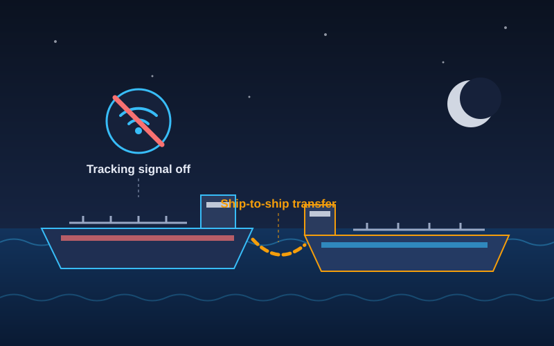
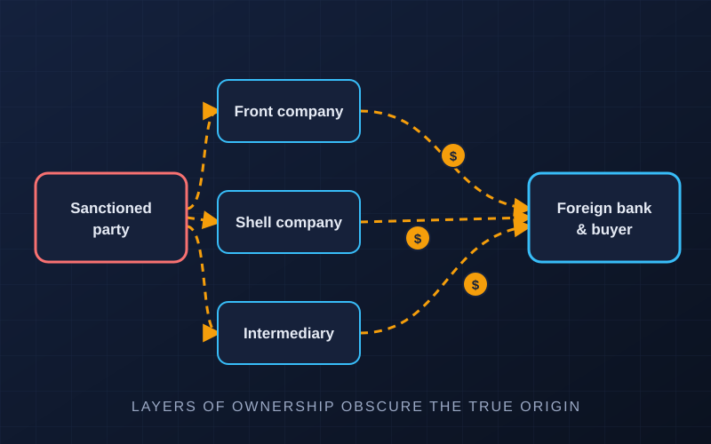

Evasion Methods
A high-level overview of patterns documented in public Panel of Experts reports and government advisories. The aim is awareness and detection, not instruction.

Concealment at sea
Most global trade moves by ship, which makes shipping a frequent route for restricted commodities such as oil, coal and arms.
- Tracking manipulation: switching off or falsifying vessel identification signals
- Ship-to-ship transfers: moving cargo between vessels away from ports
- Identity and flag changes: frequent renaming, re-flagging or false flags
- Document fraud: misleading statements about the cargo’s origin or destination
Hiding the money trail
Sanctioned parties need to receive and move funds without triggering bank controls.
- Front and shell companies: entities with little real activity that mask the true owner
- Layered ownership: chains of companies across several jurisdictions
- Third-party payments: funds sent via intermediaries unconnected to the deal
- Digital assets: Panel reports have documented large-scale cryptocurrency theft and laundering linked to DPRK cyber actors

Other documented patterns
Beyond shipping and finance, investigators have described several other recurring approaches.
Transshipment & mislabelling
Routing goods through third countries and describing them inaccurately to obscure their true origin or end user.
False end-user papers
Forged or misleading end-user certificates and the use of brokers to disguise who will actually receive weapons.
Overseas workers
Earnings from workers sent abroad have been identified as a revenue source that UN measures sought to curb.
Civilian-looking procurement
Items with both civilian and military uses ordered through intermediaries with no apparent end-use link.
Illicit trade flows
Banned or capped goods such as charcoal, petroleum or minerals sold through informal or covert networks.
Air cargo
Cargo flights with unclear routing or ownership have featured in arms embargo investigations.
Common red flags
Banks, shippers, insurers and customs authorities use indicators like these to spot activity that deserves a closer look. A single red flag is not proof of wrongdoing.
Vessels & cargo
- Unexplained gaps in vessel tracking near high-risk areas
- Frequent changes of name, flag or ownership
- Cargo or route inconsistent with the vessel’s capabilities
Companies & payments
- Newly formed companies with no clear business purpose
- Shared addresses, officers or contact details across firms
- Payments from unrelated third countries
- Prices or quantities far from market norms